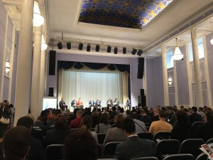
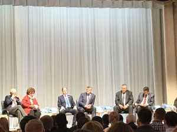

Сегодня Колпинский район Санкт-Петербурга, где расположены главные петербургские производства, стал деловым центром Северной столицы. На площадке КДЦ «Ижорский» состоялся Второй Форум промышленных предприятий и предпринимателей Колпинского района - «Колпинский Деловой Форум». В Форуме приняли участие члены Правительства Санкт-Петербурга, руководители профильных комитетов Санкт-Петербурга, депутаты Законодательного Собрания Санкт-Петербурга, руководители промышленных предприятий и предприниматели, осуществляющие свою деятельность на территории Колпинского района и г. Санкт-Петербурга.
← Все новости
Руководство компании ООО «АЕТ Транс» приняло участие в Втором Форуме промышленных предприятий и предпринимателей Колпинского района - «Колпинский Деловой Форум».
Сегодня Колпинский район Санкт-Петербурга, где расположены главные петербургские производства, стал деловым центром Северной столицы. На площадке КДЦ «Ижорский» состоялся Второй Форум промышленных предприятий и предпринимателей Колпинско...

